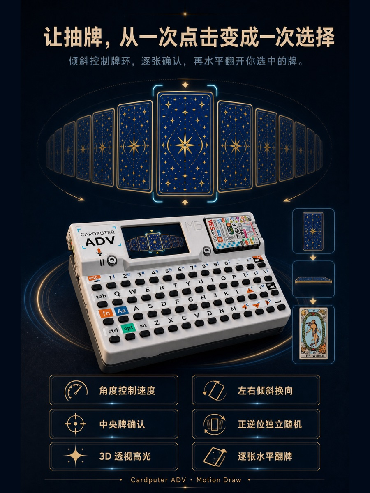
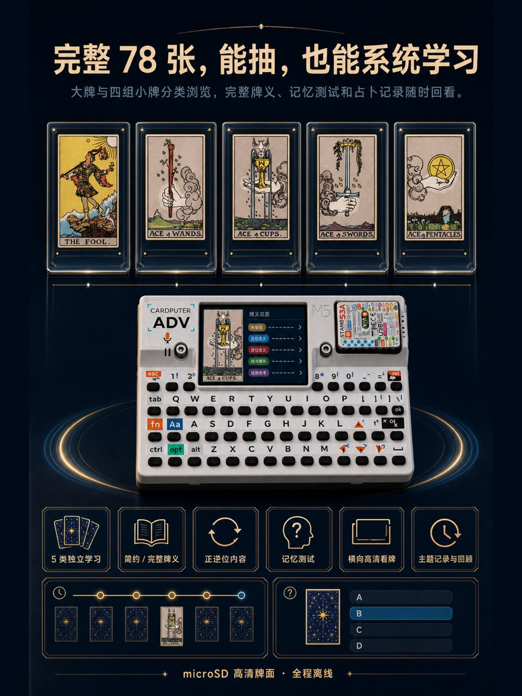

01 · SHUFFLE
One complete deck shuffle
On entering a reading, the ESP32-S3 hardware random source uses Fisher–Yates to create a complete, non-repeating 22- or 78-card ring.
Cardputer ADV · Offline Tarot System
ADV Tarot brings deep 78-card study, motion-driven selection, and private reading review to Cardputer ADV. Tilt the device to move the deck around a ring. Your movement controls direction, speed, and resting point; the centered card is locked only when you confirm.
A fixed deck, a physical choice
It behaves more like a physical shuffle: the deck order is established first, then you move through and choose from that deck. Tilting never secretly changes its order, and confirmation does not trigger another draw.
On entering a reading, the ESP32-S3 hardware random source uses Fisher–Yates to create a complete, non-repeating 22- or 78-card ring.
Every card receives its own hardware-random orientation. Order and orientation are fixed before the first selection.
Lateral angle controls direction and speed. A smooth five-stage response keeps fine control near center and accelerates naturally.
The selected card leaves the ring while the remaining order stays intact. Three selections cannot repeat, and confirmation reads no new random value.
Depth before fortune-telling
ADV Tarot provides separate upright and reversed material for all 22 Major and 56 Minor Arcana cards. Complete mode develops an interpretation from visual evidence, deck position, and practical application; concise mode keeps the essential reading close at hand.
Figures, direction, color, objects, distance, and composition are identified before explaining how they support a reading.
Relationships, career, study, finances, and wellbeing each have their own section instead of collapsing into vague good or bad luck.
Reversals separately examine blockage, internalization, excess, delay, reconsideration, and recovery rather than mechanically swapping positive and negative.
Material is informed by Waite’s public-domain text, Book T, and card-specific references. Astrology, elements, and number are comparison frameworks—not guarantees of an event.
Made for a 240 × 135 device
Every effect is designed around the real Cardputer ADV display and its no-PSRAM constraints. The centered card appears larger and closer; cards recede toward the sides. After confirmation, the back folds into a horizontal reveal and the face continues to respond to your grip in 2.5D.


Meanings, study, recall, motion selection, spreads, and the latest 12 readings remain available. The star card back and all 22 Major Arcana faces are embedded; missing Minor Arcana art uses safe placeholders.
With the full asset set, all 78 upright/reversed transparent PNG faces are used and completed readings are archived as JSON. This first public Release contains firmware only and does not include the SD artwork pack.
Firmware v1.0.0
Both files target M5Stack Cardputer ADV only. Verify the download
against SHA256SUMS.txt, then use the path that matches
the device’s current state.
Includes bootloader, partition table, and application for a clean install.
ADV-Tarot-Cardputer-ADV-v1.0.0-factory.bin0x0Writes only the application partition on a device already running ADV Tarot.
ADV-Tarot-Cardputer-ADV-v1.0.0-update.bin0x100000x10000, and never flash
the Update file at 0x0.
GitHub’s automatic “Source code” archives contain this public presentation site only—not the private firmware source.